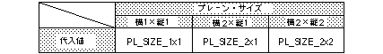

Return to previous page | Return to menu | Go to next page
void
Scroll function
NBG plain size set
void slPlaneNbg0(type)
void slPlaneNbg1(type)
void slPlaneNbg2(type)
void slPlaneNbg3(type)
Uint16 type ;
type Uint16 type numerical value corresponding to the plain size specification
Sets the normal scroll plane size.
Refer to the table below for the values assigned to the parameters.
None
If the reduction setting is set to 1/4, do not specify 2x2 as the plane size.
This is because the map size when the reduction setting is 1/4 times is different from the normal size.
1x1, 2x1 settings can be used without problems.

Note) The values in the above table are defined in “sl_def.h” included with the system.
Reference: Chapter 8 Scroll
slPlaneNbg0,1,2,3